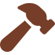
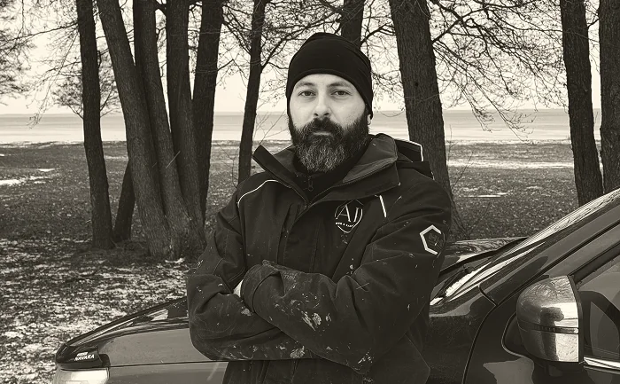

Välkommen till AP Mur & Kakel
Värderingar
Vi bygger vårt arbete på professionalism, hållbarhet och ett jordnära, modernt arbetssätt. Genom noggrannhet, tydlig kommunikation och engagemang säkerställer vi att varje projekt utförs med högsta kvalitet.
Vi väljer material och metoder som håller över tid och skapar resultat som är både funktionella och estetiskt tilltalande. Samtidigt kombinerar vi traditionellt hantverk med moderna lösningar och kreativa idéer, vilket gör oss till en trygg och lyhörd partner i alla projekt.
Oavsett om det gäller microcement, ett badrum, mur- och putsarbeten eller exklusiva ytor i kalksten, strävar vi alltid efter samma sak: att lämna ifrån oss ett resultat som vi och våra kunder kan vara stolta över.
Hållbarhet
Kvalitet
Trygghet

Professionellt hantverk
En trygg och hållbar affär
För att leverera resultat som håller över tid arbetar vi enligt branschens högsta standarder. Vi är certifierade inom microcement av Designcement samt BKR-behöriga (Byggkeramikrådet), vilket innebär att vi följer godkända metoder och riktlinjer för säkra och hållbara bygg- och våtrumsarbeten.
AP Mur & Kakel har god kreditvärdighet enligt UC, vilket är ett kvitto på en stabil och seriös verksamhet. För dig innebär det en extra trygghet när du anlitar oss. Vi är ett företag med ordnad ekonomi, långsiktigt tänkande och hög professionalism. Vi värnar om förtroende i varje samarbete och strävar alltid efter att leverera ett hantverk som håller över tid, både kvalitetsmässigt och affärsmässigt.
Erfaren företagsgrundare
Företaget grundades 2024 av Amel Pekusic med en tydlig vision:
Att erbjuda ett hantverk där kvalitet, hållbarhet och modern design möter gedigen erfarenhet
Även om företaget är ungt står det på stabil grund med nästan 15 års erfarenhet inom kakel, klinker, mur, puts och kalksten, och har under åren utvecklat en stark yrkesstolthet och känsla för detaljer.
